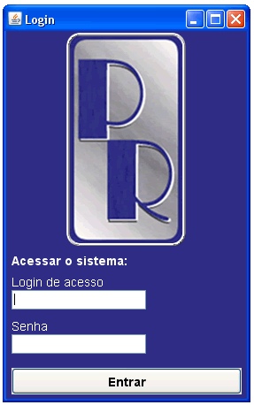

Para se ter acesso ao sistema é necessário ser cadastrado como usuário do aplicativo gerenciador de vendas dados que ditarão seus direitos sobre o sistema.
Administrador - Plenos direitos sobre o sistema cadastrado, consultando e excluindo sem restrição nenhuma. Um usuário cadastro neste grupo de usuários também terá acesso as comissões de vendas dos funcionários.
Secretaria - Se iguala no gerenciamento de informações quanto ao administrador com acesso restrito somente nos dados referentes a comissões de vendas.
Convidado - Acesso somente para consulta, este usuário não poderá nem cadastrar e nem alterar dados também sem acesso a dados referentes a comissões